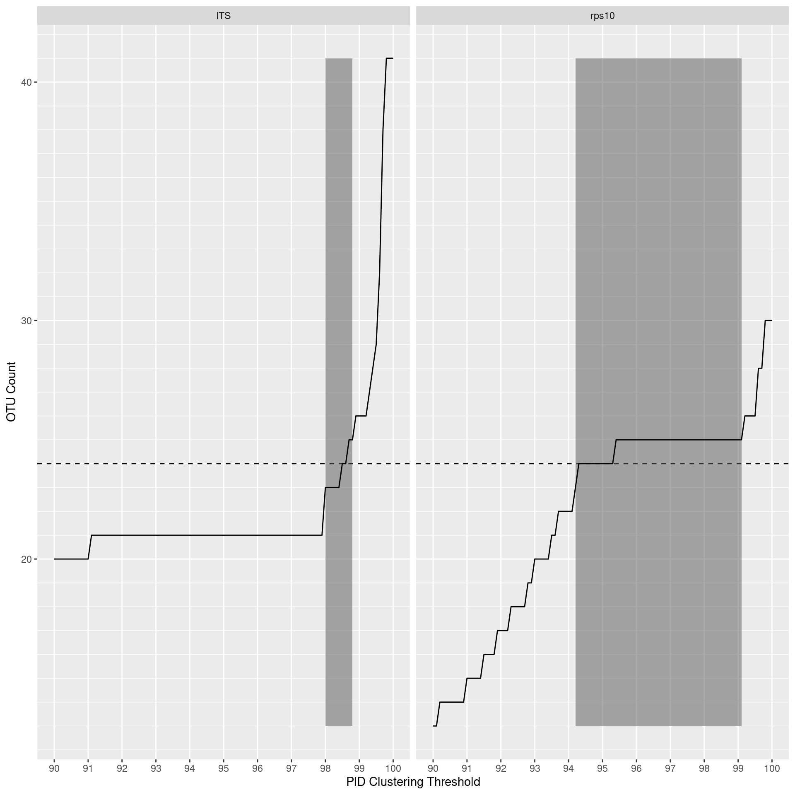

library(dplyr)
library(purrr)
library(furrr)
library(tidyr)
library(readr)
library(ggplot2)
library(sessioninfo)
library(metacoder)
library(vegan)
library(viridis)
library(DT)
library(stringr)
library(qsubmitter)
library(taxize)
library(forcats)
library(parallel)opt_thresh_range = seq(0.9, 1, by = 0.001) # The specific thresholds checked during the optimization
opt_min_read_count <- 50 # used in id threshold optimization
opt_cluster_method <- 'size' # 'fast' for length-ordered, 'size' for abundance-ordered
seed <- 1
set.seed(seed)metadata <- read_csv(file.path('intermediate_data', 'metadata.csv'))##
## ── Column specification ────────────────────────────────────────────────────────
## cols(
## sample_id = col_character(),
## primer_pair_id = col_character(),
## dna_type = col_character(),
## dna_sample_id = col_character(),
## locus = col_character(),
## forward = col_character(),
## reverse = col_character(),
## sample_type = col_character()
## )abundance <- read_csv(file.path('intermediate_data', 'abundance_asv.csv'))##
## ── Column specification ────────────────────────────────────────────────────────
## cols(
## .default = col_double(),
## sequence = col_character(),
## blast_tax = col_character(),
## taxonomy = col_character()
## )
## ℹ Use `spec()` for the full column specifications.print(metadata)## # A tibble: 48 x 8
## sample_id primer_pair_id dna_type dna_sample_id locus forward reverse
## <chr> <chr> <chr> <chr> <chr> <chr> <chr>
## 1 A1 rps10_Final mock1 mock1 rps10 rps10-F rps10-R
## 2 A2 rps10_Final leaf L95 rps10 rps10-F rps10-R
## 3 A3 rps10_Felipe mock1 mock1 rps10 rps10_… rps10-R
## 4 A4 rps10_Felipe leaf L95 rps10 rps10_… rps10-R
## 5 A5 ITS6/7 mock1 mock1 ITS ITS6 ITS7
## 6 A6 ITS6/7 leaf L95 ITS ITS6 ITS7
## 7 B1 rps10_Final mock2 mock2 rps10 rps10-F rps10-R
## 8 B2 rps10_Final WR.soil WS3 rps10 rps10-F rps10-R
## 9 B3 rps10_Felipe mock2 mock2 rps10 rps10_… rps10-R
## 10 B4 rps10_Felipe WR.soil WS3 rps10 rps10_… rps10-R
## # … with 38 more rows, and 1 more variable: sample_type <chr>Some samples do not have sequences so I will remove those from the metadata table:
metadata <- metadata[metadata$sample_id %in% colnames(abundance), ]I will want to check for an optimal clustering threshold for RPS10 since it is not currently known. To do this, I will need to cluster over many thresholds. It is important to note that the optimal threshold is relative to the reference sequence database and the clustering algorithm used, therefore this analysis is mostly to get a rough idea of an optimal threshold.
First I will filter sample metadata to just mock community and the primers used in the publication. We are using only the mock community samples since that is the closest thing to a natural community that we know the composition of. I did something similar with the reference sequences, but they all resulted in too few clusters even if sequences were clustered at 100% (i.e. unique sequences). On reflection, this is probably because reference databases have more diversity and fewer erroneous sequences than real data from a natural sample would. Our environmental samples could not be used because we do not know the “correct” number of species.
mock_meta <- filter(metadata, dna_type == 'mock2', primer_pair_id %in% c('ITS6/7', 'rps10_Final'))
mock_meta## # A tibble: 2 x 8
## sample_id primer_pair_id dna_type dna_sample_id locus forward reverse
## <chr> <chr> <chr> <chr> <chr> <chr> <chr>
## 1 B1 rps10_Final mock2 mock2 rps10 rps10-F rps10-R
## 2 B5 ITS6/7 mock2 mock2 ITS ITS6 ITS7
## # … with 1 more variable: sample_type <chr>I will need the number of the mock community species added later, so I will import the data for the mock community composition:
mc_data <- read_csv(file.path('intermediate_data', 'mock_community.csv'))##
## ── Column specification ────────────────────────────────────────────────────────
## cols(
## species = col_character(),
## concentration = col_double(),
## isolate = col_character(),
## growth_medium = col_character(),
## extraction_kit = col_character(),
## in_its_db = col_logical(),
## in_rps10_db = col_logical(),
## in_its_db_no_ambig = col_logical(),
## in_rps10_db_no_ambig = col_logical()
## )I will also zero out low abundance ASVs, since that would be done in a normal metabarcoding analysis. Here we are using a rather high minimum abundance of 50 since this is a low-complexity sample, and thus higher read count per species, relative to most natural communities, so erroneous sequence abundance is probably similarly inflated.
opt_filtered_abund <- select(abundance, sequence, !!! mock_meta$sample_id)
opt_filtered_abund <- opt_filtered_abund[rowSums(opt_filtered_abund[, mock_meta$sample_id]) > opt_min_read_count, ]
opt_filtered_abund## # A tibble: 71 x 3
## sequence B1 B5
## <chr> <dbl> <dbl>
## 1 TTTCCGTAGGTGAACCTGCGGAAGGATCATTACCACACCTAAAAAAACTTTCCACGTGAACCG… 0 147595
## 2 GAAAATCTTTGTGTCGGTGGTTCAAGTCCACCTCCAGACAAAATATAATAAAATTATGTATAT… 45398 0
## 3 TTTCCGTAGGTGAACCTGCGGAAGGATCATTACCACACCTAAAAAACTTTCCACGTGAACCGT… 0 60788
## 4 GAAAATCTTTGTGTCGGTGGTTCAAATCCACCTCCAGACAATTTTTATTATTAAAAATATGTA… 28991 0
## 5 TTTCCGTAGGTGAACCTGCGGAAGGATCATTACCACACCTAAAAACTTTCCACGTGAACTGTC… 0 47346
## 6 TTTCCGTAGGTGAACCTGCGGAAGGATCATTACCACACCTAAAAAACTTTCCACGTGAACCGT… 0 25411
## 7 GAAAATCTTTGTGTCGGTGGTTCAAATCCACCTCCAGACAATTTTTATTATTAAAAATATGTA… 12259 0
## 8 GAAAATCTTTGTGTCGATGGTTCAAATCCATCTCCAGACAATTTTCATTATTAAAAATATGTA… 22213 0
## 9 TTTCCGTAGGTGAACCTGCGGAAGGATCATTACCACACCTTAAAACTATCCACGTGAACCGTT… 0 3192
## 10 GGTTTCCGTAGGTGAACCTGCGGAAGGATCATTACCACACCTAAAAAAACTTTCCACGTGAAC… 0 12611
## # … with 61 more rowsCount the number of OTUs for each sample over a range of clustering thresholds.
vserach_cluster <- function(seqs, seq_abund, id_threshold = 0.97, method = "fast") {
# Check that VSEARCH is installed
tryCatch(system2("vsearch", args = "--version", stdout = FALSE, stderr = FALSE),
warning=function(w) {
stop("vsearch cannot be found on PATH. Is it installed?")
})
# Run VSEARCH
input_fasta_path <- tempfile()
write_lines(paste0('>', seq_along(seqs), ';size=', seq_abund, '\n', seqs), path = input_fasta_path)
otu_centroid_path <- tempfile()
command_args <- paste(paste0("--cluster_", method),
input_fasta_path,
"--threads", detectCores() - 1,
"--id", id_threshold,
"--sizein",
"--strand plus",
"--fasta_width 0", # 0 = no wrapping in fasta file
"--centroids", otu_centroid_path)
system2("vsearch", args = command_args, stdout = FALSE, stderr = FALSE)
# Return OTU sequences
centroids <- read_fasta(otu_centroid_path)
names(centroids) <- str_match(names(centroids), pattern = 'size=(.+)$')[, 2]
return(centroids)
}
opt_thresh_data <- tibble(thresh = opt_thresh_range)
opt_thresh_data[mock_meta$locus] <- map(mock_meta$sample_id, function(sample_id) {
map_dbl(opt_thresh_range, function(threshold) {
has_seq <- opt_filtered_abund[[sample_id]] > 0
length(vserach_cluster(seqs = opt_filtered_abund$sequence[has_seq],
seq_abund = opt_filtered_abund[[sample_id]][has_seq],
id_threshold = threshold,
method = opt_cluster_method))
})
})## Warning: The `path` argument of `write_lines()` is deprecated as of readr 1.4.0.
## Please use the `file` argument instead.
## This warning is displayed once every 8 hours.
## Call `lifecycle::last_warnings()` to see where this warning was generated.opt_thresh_data## # A tibble: 101 x 3
## thresh rps10 ITS
## <dbl> <dbl> <dbl>
## 1 0.9 13 20
## 2 0.901 13 20
## 3 0.902 14 20
## 4 0.903 14 20
## 5 0.904 14 20
## 6 0.905 14 20
## 7 0.906 14 20
## 8 0.907 14 20
## 9 0.908 14 20
## 10 0.909 14 20
## # … with 91 more rowsfind the range of thresholds that return the correct value
valid_thresh_range <- do.call(rbind, map(mock_meta$locus, function(l) {
out <- range(opt_thresh_data$thresh[abs(opt_thresh_data[[l]] - nrow(mc_data)) <= 1])
names(out) <- c('min_thresh', 'max_thresh')
return(out)
})) %>% as_tibble()
valid_thresh_range <- as_tibble(valid_thresh_range) %>%
mutate(locus = mock_meta$locus) %>%
select(locus, min_thresh, max_thresh)
valid_thresh_range$min_count <- min(opt_thresh_data[mock_meta$locus])
valid_thresh_range$max_count <- max(opt_thresh_data[mock_meta$locus])
valid_thresh_range## # A tibble: 2 x 5
## locus min_thresh max_thresh min_count max_count
## <chr> <dbl> <dbl> <dbl> <dbl>
## 1 rps10 0.942 0.991 13 41
## 2 ITS 0.98 0.988 13 41Now plot
opt_thresh_plot <- opt_thresh_data %>%
gather(key = 'locus', value = 'otu_count', !!! mock_meta$locus) %>%
mutate(thresh = thresh * 100) %>%
ggplot() +
geom_hline(yintercept = nrow(mc_data), linetype = "dashed") +
geom_rect(aes(xmin = min_thresh * 100, xmax = max_thresh * 100, ymin = min_count, ymax = max_count), data = valid_thresh_range, alpha = 0.5) +
geom_line(aes(x = thresh, y = otu_count)) +
scale_x_continuous(breaks = seq(min(opt_thresh_data$thresh), max(opt_thresh_data$thresh), by = 0.01) * 100,
minor_breaks = NULL) +
scale_y_continuous(minor_breaks = 1:50) +
facet_wrap(. ~ locus) +
labs(x = 'PID Clustering Threshold', y = 'OTU Count', fill = '')
ggsave(opt_thresh_plot, filename = 'optimal_clust_thresh_mock_comm.pdf', path = file.path('results'), width = 10, height = 5)
opt_thresh_plot